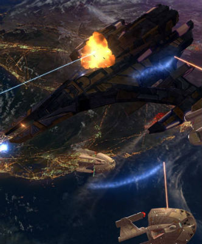

We've had to politely tell people for a couple of years now that we would be doing a non-Steam old-worldy installer version of Star Trek: Continuum Remastered "later" so many times that I'm sure all you that have down voted us for it have long forgotten about our little hobby.
Well now is the time to get your hands on what is currently the latest version of the mod, fresh out of my Steam downloads folder and wrapped up in a nice installer and launcher especially for you!
Since moving to the remastered engine the mod is much more visually appealing and some of the restrictions that were around additional races and the likes are just not a thing anymore. We've already added three extra fully playable races to the game:

CONSIDERATION
As always, we recommend subscribing to our mod on the Steam Workshop page first and foremost. This allows immediate access to updates and makes it easier on us devs to get hot fixes out to you in a timely fashion.